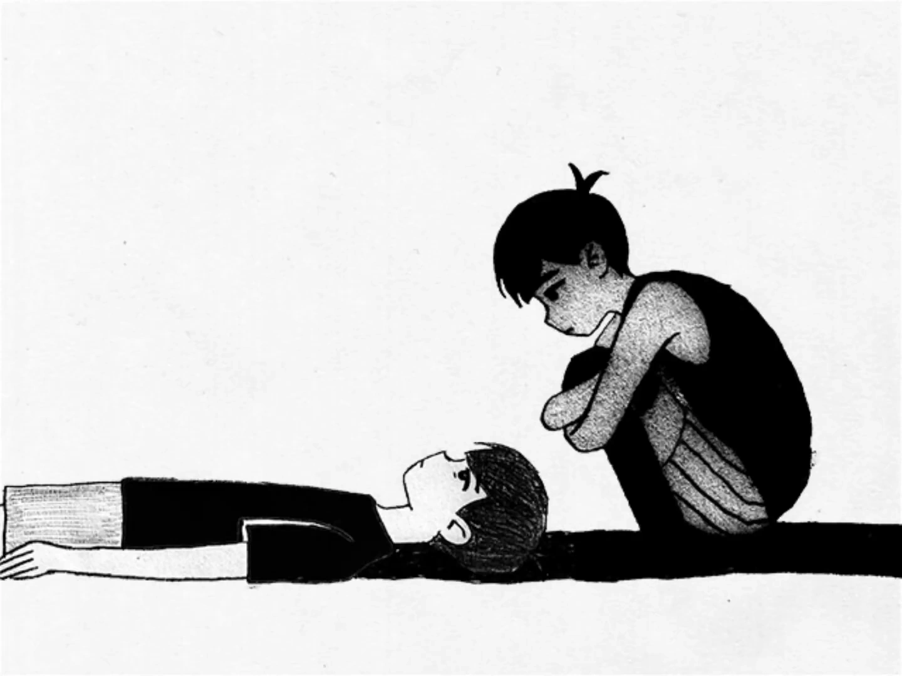

Suatu hari, Taufik berlibur ke Bandung. Beberapa hari pertama berjalan biasa saja — sampai waktunya pulang ke Banjarmasin tiba, dan semuanya berubah dalam hitungan menit.
Saat itu dia sedang duduk di ruang tamu. "Teman" ibunya mengajaknya masuk ke kamar. Pintu dikunci dari dalam. Yang terjadi setelahnya adalah cekikan di lehernya, dan kilatan pisau yang diarahkan padanya. Dia melawan. Kalau saja dia tidak berhasil membela diri malam itu, mungkin bab ini tidak akan pernah ditulis.
Sepulang dari sana, Taufik bukan lagi anak yang sama. Malam-malamnya diisi mimpi buruk yang datang tanpa diundang. Suara pintu terkunci, bayangan tangan mendekat ke leher — hal-hal kecil yang mengingatkannya pada kamar itu bisa membuat dadanya sesak tanpa peringatan.
Ternyata, Bandung bukan satu-satunya tempat di mana pisau pernah diarahkan kepadanya.
Suatu hari, pertengkaran hebat pecah di rumah. Lagi-lagi pisau melayang ke arahnya — kali ini dari tangan keluarganya sendiri. Dua kali ditusuk. Dua kali nyawanya nyaris direnggut oleh orang yang seharusnya melindunginya.
Pada suatu waktu, Taufik berbaring di alam bawah sadarnya, terlalu lelah untuk terus menanggung semuanya sendirian. Dari bayangannya sendiri, lahirlah sosok yang akan menjadi penjaganya. Sosok itu membuka mata perlahan, dan menatap Taufik dengan tatapan dingin.

Momen penciptaan Alter

Pertemuan pertama Taufik dengan Alter
Sejak saat itu, mereka tidak pernah benar-benar terpisah.
Sosok itu kemudian dikenal sebagai "Alter", yang berarti "yang lain" atau "alternatif". Secara tidak sengaja, Taufik menciptakan alter ego dari dirinya menggunakan kegelapan, rasa sakit, dan kebencian.